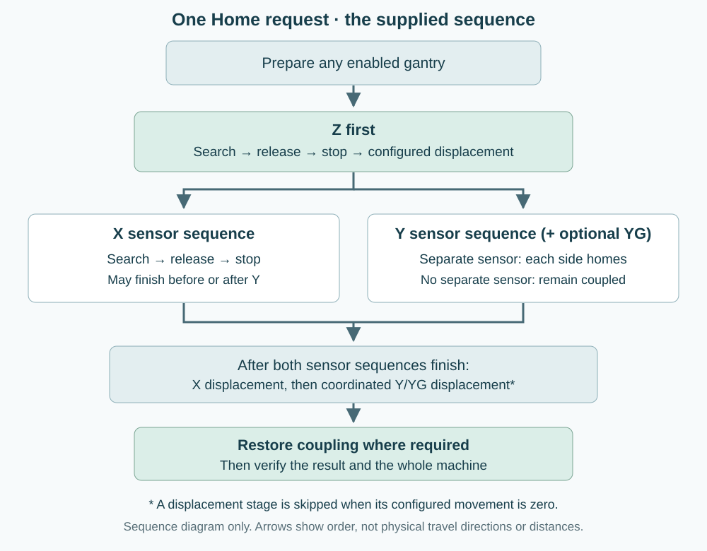

RADONIX · ROUTERXYZ+TC · CHAPTER 6
Operator Manual · English · 8 October 2026
Homing the Machine
Establish the machine reference deliberately: prepare the whole travel area, understand the movement sequence, and distinguish a completed Home from a request, a partial result or an interruption.
Expanded draft for review. This chapter describes the supplied RouterXYZ+TC homing sequence. The installed machine's directions, sensor locations and approved operating procedure must be confirmed before physical use.
6.1 Understand what Home establishes
Before the machine can use a destination reliably, it needs an established reference for its own travel. Homing is the operation used to establish that reference. In the supplied RouterXYZ+TC sequence, the machine moves in configured directions, detects its home sensors, moves away until those sensors release, and assigns the configured machine coordinates. It may then make a further configured displacement before completing.
A home sensor is a device that changes its signal when the relevant moving part reaches its sensing area. Think of it as a recognizable landmark along the axis. The machine uses a defined approach and release sequence to relate that landmark to its coordinate system. A sensor is not a mark on the workpiece, and finding it does not tell the machine where the corner or surface of your material is.
The practical result of successful homing is a machine reference on which later positioning can depend. It does not prepare every other part of a job. Your work origin, cutter, tool measurement, clamps, file and movement routes still need their own checks.
| Operation | Purpose | What it does not establish |
|---|---|---|
| Home | Run the sensor-based machine-reference sequence. | The material's work origin or a verified tool length. |
| Go Home | Request positioning to machine zero using the established reference. | A new sensor-based reference. |
| Go Ref | Request positioning associated with the work reference and applicable corrections. | Successful homing or a newly measured work origin. |
| Zero setting | Change a work-reference value through the relevant setup command. | Physical movement to a home sensor. |
The similar names are easy to mix up. In this manual, Home means establishing the reference, while Go Home is a positioning command. If the machine needs homing, moving to a position that looks like home is not a substitute.
Homing is real machine movement in Normal mode. It can take the head and bridge beyond the outline of the next machining job. Read this chapter together with Safe Operation and Pre-start Checks; understanding the button is only one part of preparing the operation.
6.2 Know when the machine reference needs attention
At the start of a working session, read the Homed indication as part of the startup checks. Do not assume that a reference from an earlier session is still available. The application checks the current controller state, not your memory of the last successful Home.
The Homed indication combines the state of every configured motor, including any enabled XG, YG or ZG companion. All must report homed while the machine is online for this indication to be on. This is deliberately different from the individual X, Y and Z readiness indications. A motor can be ready to accept homing movement without already having an established reference.
Some operations depend on that complete reference. The reviewed application requires all configured motors to be homed for normal machining and absolute-position jogging. A command may therefore remain unavailable even when the connection and individual axis indications look satisfactory.
| Situation | Operator response |
|---|---|
| Starting work or reconnecting | Check the actual mode, current Homed state and the installed startup procedure. Do not infer the result from saved values. |
| Homed is off | Establish why the complete reference is unavailable. Prepare and perform Home when required and permitted. |
| A previous Home was interrupted or unsuccessful | Treat the result as incomplete. Resolve the cause and follow the recovery procedure before a new attempt. |
| The machine was serviced, moved unexpectedly or involved in a collision | Have the physical condition and reference validity assessed. A retained indication cannot establish that the mechanics are correct. |
| Changing between Simulation and Normal mode | Recheck the state in the newly connected mode. A simulated reference is not evidence that the physical machine has been homed. |
When the indication is already on
An on indication reports the controller's current homing state. It does not by itself tell you whether a new Home is required by your workshop's startup or recovery procedure. Follow that procedure and consider what has happened since the reference was established. Avoid pressing Home repeatedly as a habit: each accepted request is another automatic movement.
Likewise, do not repeatedly reconnect just to obtain a different indication. A reconnection is not a homing procedure. After any connection change, let startup complete, read the current state and then decide the next authorized action.
If the Homed indication disappears unexpectedly during a working session, stop advancing the job. Record what happened immediately beforehand and inspect the associated messages. The indication alone does not identify the cause. Do not change reference values to make the coordinates look familiar or try a different command to bypass the missing state.
Detailed recovery after mechanical work is outside an ordinary operator's homing routine. If you cannot establish that the machine is physically ready for the expected sequence, obtain assistance before issuing movement.
6.3 Prepare the machine and the whole homing route
Prepare for the complete sequence before you press Home. Do not plan to clear an obstruction between the Z stage and the horizontal stage: the supplied operation advances automatically. Once the request starts, later movements do not wait for you to press Home again.
First confirm that you are at the correct machine and that the application is connected in the intended mode. Simulation is useful for learning the sequence, but it cannot demonstrate clearance around the physical cutter, clamps or bridge. In Normal mode, treat the request as permission for the entire homing sequence to move the real machine.
Know the installed homing directions and sensor locations before the first physical attempt. This chapter cannot identify a universal left, right, front, rear, up or down for your installation. Those depend on the machine arrangement and approved configuration. If a direction is unfamiliar, have it explained at the machine before starting.
| Check | What you need to establish |
|---|---|
| People and access | The movement area is clear and the installed guarding/access procedure has been followed. You can observe from the designated operating position. |
| Tool and head | The fitted tool is secure and identified; its projection, holder and surrounding equipment permit the expected movement. Follow the machine's required spindle condition. |
| Material and fixtures | The workpiece, clamps, stops and other fittings permit the full homing travel, including reversal and final displacement. |
| Bridge and services | The bridge route and associated hoses, cables and accessories are clear according to the installed inspection procedure. |
| Controller state | The intended connection is operational, axes are ready, and relevant alarms or emergency indications have been resolved. |
| Other operations | No machining, manual jog, positioning, tool operation or other movement remains active or pending in a way that prevents Home. |
| Stopping response | You know the ordinary stop control and the installed emergency response, and can reach the required controls from your operating position. |
The supplied sequence starts with Z, but that does not prove that Z has clearance from its present position. A tool may already be within material or beneath an obstruction. Do not use Home as an improvised escape movement. If the current position requires recovery, use the approved recovery procedure with the necessary assistance first.
Read the screen after the physical preparation. A permitted command means that the application has accepted certain machine-state conditions; it does not mean the application has inspected your fixtures. Conversely, an unavailable command is a reason to investigate the state, not a reason to search for a keyboard shortcut that might bypass it.
FIGURE 6-1 · INSTALLED-MACHINE IMAGE REQUIRED
The installed homing directions and observation position
Supply a photograph or approved machine drawing showing the actual Z, X and Y/YG homing directions, the home-sensor regions, the whole bridge travel area and the designated operator position. Label any fixture restrictions specific to this machine.
Suggested image: assets/images/06-installed-homing-route.png. Have the machine supplier or responsible technician confirm the arrows; do not copy generic axis directions.
If every check is satisfactory, remain in the operating position and continue to the request procedure. If any route, tool condition or machine state is uncertain, resolve that specific uncertainty before pressing Home.
6.4 Identify the Home control and understand why it may be unavailable
The main-window Home control requests the complete supplied machine-homing sequence. Locate it before preparing the first movement, and distinguish it from the separate Go Home control. Review the main-window command comparison if the two controls are unfamiliar.
You need operator access and an operational connection for machine interaction. Complete any required login described in Chapter 3. Opening an engineering window is not part of the ordinary Home procedure. If the application has no operator access, resolve the access issue through the normal login route.
Home also requires the selected homing operation and relevant axes to be ready. A button can be unavailable for several reasons; its appearance alone does not identify which one applies. Read the current indications and any related messages rather than repeatedly clicking.
| Condition to check | What it means for the operator |
|---|---|
| Connection or access is unavailable | Complete startup or the authorized login/reconnection procedure. A visible main window alone is insufficient. |
| An axis is moving, stopping or otherwise occupied | Wait for the current operation to finish, or stop it deliberately using its approved procedure. Do not issue competing movements. |
| A machining or auxiliary movement remains active | Home requires exclusive use of motion. A paused job is not automatically equivalent to a fully idle machine. |
| An axis is not ready or has a coupling fault | Record and resolve the reported condition. Do not alter configuration to force the control available. |
| The normal gantry relationship is not established | Complete-machine and Y homing require the expected paired-axis state at admission. Obtain assistance if it has not recovered. |
| The installed Home routine is unavailable | The machine-control routine must be enabled, loaded and deployed. Missing or rejected routines need authorized investigation. |
The last row refers to the machine's internal operating routine, not to the cutting file you open for a job. You do not need to load a part program just to perform Home. Conversely, changing the part file cannot repair a missing homing routine.
Do not use shortcuts to work around a condition
A keyboard command, where configured, asks for the same operation; it is not an alternative readiness procedure. Use only the shortcut documented for your installation, and do not experiment with unfamiliar keys while the machine is connected. Shortcut assignments can differ, so this chapter does not invent a universal Home key.
The application rechecks readiness when dispatching the request. It is therefore possible for a control to have looked available just before a changing machine state causes rejection. In that case, use the reported result, not the button's earlier appearance, to decide what happened.
Once access, connection, operation state and the physical prechecks are satisfactory, use the single deliberate request described next. If a condition cannot be explained from the indications and messages, leave the operation unstarted and record the details for support.
6.5 Start one complete Home operation deliberately
This procedure is for the main-window Home command, which requests the complete machine sequence. It assumes that the physical checks in Section 6.3 are complete and that you are authorized to operate this installation. Do not use the procedure to diagnose an unknown mechanical condition by trial movement.
- Confirm the intended runtime mode and connection.
Read the connection indication. Establish whether you are practising in Simulation or operating the real machine in Normal mode. Complete any required operator login and wait for startup to settle.
- Check that the machine is available for Home.
Read the axis readiness, alarm and emergency indications. Confirm that other operations have ended and that no jog control is being held. Investigate an unavailable Home control before proceeding.
- Make the final physical check from the designated operating position.
Confirm that the full route remains clear, including the tool, bridge and reversal/displacement travel. Ensure that everyone affected knows automatic movement is about to begin according to the workshop procedure.
- Press Home once.
This requests the whole sequence. Do not press Go Home, Run or an individual-axis command as an additional start instruction. Home is not a hold-to-jog control; releasing your click does not mean the sequence has been cancelled.
- Observe the response and the machine.
Expect the Z stage first, followed by X and the Y/YG gantry stage in the supplied routine. Remain attentive to the physical movement and messages. If there is no movement, establish whether the request was rejected or is still being processed; do not repeatedly press the control.
- Wait for the complete result.
A sensor being reached, one motor stopping or a changed readout is an intermediate event. Wait for all stages to finish, then carry out the completion checks in Section 6.8.
Understand the difference between request and result
The application reports a Home request separately from activation and completion. This helps distinguish “I pressed the button” from “the controller started the routine” and from “the operation ended successfully.” Those are three different events.
| Report wording you may encounter | Meaning |
|---|---|
| Home requested | The application received the operator's request. This is not completion. |
| Home request accepted | The activation request was accepted. The application is still awaiting activation and completion. |
| Home PLC activated | The machine-control homing routine has activated. The word PLC identifies that internal routine. |
| Home PLC ended | The routine has ended; read its exit reason, result and success indication together. |
| Request rejected | The requested start was not accepted. Read the accompanying reason before another attempt. |
These are operation-report entries, not a promise that a separate dialog will appear at each stage. In the reviewed main window, double-clicking the program progress control opens the report. Keep your attention on the moving machine; inspect detailed records when it is appropriate to do so.
An old successful entry belongs to an old attempt. When reviewing records, identify the request you just made and the matching subsequent result. A current failure must not be dismissed because a previous Home succeeded earlier in the day.
If movement is unexpected, use the appropriate stopping response immediately. Do not wait for a timeout or a completion message to intervene. The next two sections explain normal sequence details so that expected reversals and short waits are easier to recognize.
Configured sequence and optional gantries
Controller > Axes > Home Sequence defaults to Z>X,Y. Include each sensor primary once. Include an absolute primary to move it to its Home Position at Home Velocity, or omit it to keep its current machine coordinate. Full Home requires valid absolute references in either case. On an all-absolute machine an empty sequence checks references without movement. A single-axis Home explicitly selects that axis.
Use > between stages and a comma within a stage. Absolute motors in a stage must finish stopped within one encoder step of their destinations before its sensor searches begin. Sensor searches run concurrently, followed by sequential displacement moves. Set Z Home Position to the machine's verified clearance height when horizontal motion requires clearance, and include Z in the first stage.
Select matching methods for both motors of a gantry. An absolute pair stays coupled and its Home Positions must agree with the coupling offset. A sensor pair uses independent sensors when the companion sensor is enabled and otherwise follows its master. Untouched generated programs update automatically. Engineer-edited programs require separate review.
6.6 Follow the first stage: establish the Z reference
In the supplied complete Home sequence, Z is referenced before the horizontal homing stage begins. Z is the axis associated with the head's vertical travel on the usual machine arrangement. The physical search direction is defined by the installed configuration; learn that actual direction rather than assuming that a particular screen arrow or positive sign always means “up.”
Before the Z search, the generated routine prepares any enabled gantry for its homing stage. You do not need to operate separate gantry controls. This preparation is part of the complete sequence and is one reason not to issue unrelated commands while Home is active.
Search, release, stop and final displacement
If the Z home sensor is not active at the start of its search, Z moves in its configured search direction until the sensor becomes active. It then reverses and moves until the sensor releases. “Releases” means that the sensor signal becomes inactive as the axis moves out of the sensing condition; it does not mean releasing a tool or pressing a release button.
When the sensor releases, the routine requests Z to stop and waits for stopped feedback before assigning the reference coordinate. If a final homing displacement is configured, Z then makes that movement. Only after this stage does the supplied complete sequence advance to the horizontal axes.
| Part of the stage | What it means | Operator interpretation |
|---|---|---|
| Search | Find the configured sensor condition. | Observe the actual direction and route; this is not a move to the work surface. |
| Reverse and release | Leave the sensing condition in the opposite direction. | A reversal is part of the normal sequence, not automatically an error. |
| Stop and assign reference | Wait for stopped feedback and establish the coordinate. | A coordinate change is not, by itself, completion of the whole machine. |
| Configured displacement | Make the additional signed movement if its value is nonzero. | Keep observing; the sensor event need not be the last Z movement. |
| Advance to X and gantry | Continue automatically with the next stage. | No second Home click is required. |
If the sensor is already active
The first visible Z movement can be the release movement if the sensor is already active when the stage begins. The routine does not need to search farther into an already active sensor condition. This can make two legitimate starts look different when they begin at different positions.
However, an active signal does not prove that the physical sensor is functioning correctly or that the axis is at the expected location. If the behaviour does not fit the known starting position, stop and investigate rather than using this explanation to dismiss an abnormal movement.
The search and release speeds are separate configured homing values. Their visible speeds may differ. The routine captures its homing settings at the start; changing a field during an attempt is not a way to steer that attempt. Ordinary operators should observe the approved behaviour and report a mismatch, not tune directions or speeds during motion.
Do not use the jog percentage or machining-feed percentage as your stopping method for Home. They serve other movement controls and are not the homing procedure's stop command. Use the stopping response described in Section 6.10 when intervention is needed.
6.7 Follow X and the two sides of the gantry
After the Z stage, X and the Y/YG gantry perform their sensor sequences concurrently. “Concurrently” means their movements can overlap in time. It does not mean every motor starts, reaches its sensor or stops at exactly the same instant.
The gantry is the bridge-like assembly driven on two sides. For an enabled Y gantry, those drives are identified as Y and YG. With a separate enabled physical home sensor for YG, the generated routine lets both motors find their own sensors, then restores coupling. Without that sensor, the companion stays coupled throughout homing. The same rule applies to XG and ZG. The following independent-side description applies only to the separate-sensor case. YG is not a fourth workpiece coordinate that the operator should adjust independently.

Why one side can stop before the other
Each gantry side searches for its own sensor and is told to stop when that sensor is found. One side can therefore reach its sensor and stop while the other is still completing its search. The routine waits until both sensor conditions have been found and both sides report stopped before starting the reverse release stage.
During release, each side again responds to its own sensor. A side is told to stop once its sensor releases. The routine waits for both sides to finish releasing and stop before assigning their reference coordinates. These waits are intentional parts of the sequence.
This explains a limited difference in movement between the sides; it is not permission to accept visible racking, strain, abnormal noise or travel outside the known installed behaviour. If either side behaves unexpectedly, use the appropriate stop response. Do not wait for the other side to “catch up” against a suspected obstruction.
How X fits into the same stage
X follows its own search, reverse-release and stop sequence while the gantry is being referenced. It can finish its sensor sequence before or after the gantry. Once both X and the gantry sensor sequences have finished, the routine applies any configured X displacement. It then applies any configured Y/YG displacement as one coordinated movement.
For a separate-sensor gantry, the final step restores its normal coupling. Reaching the sensors is therefore not the final event. Even if the head appears stationary, allow the operation to finish and verify its outcome before requesting another motion.
| Observation | Normal sequence detail to understand |
|---|---|
| X and the bridge move during the same period | Their sensor sequences run concurrently after Z. |
| One gantry side stops first | Each side detects its own sensor; both must stop before release begins. |
| X stops while the gantry is still completing its sequence | They need not finish together. Completion still requires the later stages. |
| Another movement occurs after sensor release | A configured displacement may still be required. |
| All visible movement stops | Check the operation result and restored readiness; appearance alone does not confirm success. |
Never try to help the sequence by pushing the bridge, operating a sensor by hand or jogging YG separately. If the two-side behaviour differs from the approved machine procedure, record the stage and obtain assistance. Sensor placement, pairing and gantry adjustment belong to authorized machine setup, not routine operator trial and error.
6.8 Confirm completion without expecting every number to be zero
Completion is a combination of the operation result, the current machine state and what you observed. Do not reduce it to one event such as “the head stopped” or “a light came on.” Individual axes can acquire their homed state before final displacement and gantry restoration have finished. In addition, a machine that was already homed before another attempt may have had its indication on at the start.
For the supplied complete routine, a successful normal result means the homing movements and gantry coupling step have completed. The report's success information must be read with its exit reason and result, especially after an interruption. A numeric result of zero on its own is not sufficient evidence if the routine was cancelled or faulted.
- Establish that the current Home attempt has ended successfully.
Read relevant messages and the current operation report when necessary. Match the result to the attempt you just observed, not to an earlier successful entry.
- Wait for movement and stopping to finish.
Do not request another operation while final displacement, stopping or gantry recovery is still in progress. Physical observation and controller indications must be consistent.
- Check Homed and the axis/alarm indications.
The aggregate Homed indication must cover every configured motor. Individual axis readiness alone does not replace this check. Investigate an alarm or coupling problem even if some coordinates look plausible.
- Compare the finishing position with the approved machine expectation.
Use the documented final homing positions for this installation. Do not assume that all three displayed coordinates must read zero.
- Proceed to the next setup check.
Confirm the job's work origin, fitted tool and required tool measurement separately. Home completes one preparation task; it does not authorize an unchecked cutting start.
Why the final coordinate may be nonzero
The final homing coordinate is configured for each axis. It can be zero, positive or negative according to the installed setup. A further signed displacement can also be part of homing. The supplied sequence assigns the coordinate before that displacement so that the final coordinate equals the configured final home position.
Changing a work origin to make a nonzero machine-home reading appear as work zero would mix two different tasks. If the final machine coordinate is unexpected, compare it with the installed homing specification and investigate. Do not “correct” it through the work-reference panel.
| Observation | Valid conclusion | Still requires its own check |
|---|---|---|
| Current Home succeeds and all motors are homed | The controller has established the machine reference through this sequence. | Work origin, tool information, fixture clearance and job correctness. |
| Final coordinates match the installed specification | The readouts are consistent with the expected homing finish. | Physical accuracy and machine condition where separate verification is required. |
| The machine is stationary | No movement is apparent at that moment. | The actual result, readiness and required access procedure. |
FIGURE 6-3 · APPLICATION SCREENSHOT REQUIRED
A completed Home and its matching report entry
Supply a labelled main-window screenshot after a successful, idle Home. Include the connection/mode, Homed, axis readiness, alarm indications and Machine position panel. Pair it with the corresponding report entry showing the operation name, exit reason, result and success state.
Suggested image: assets/images/06-home-completion.png. Label any nonzero final coordinates as the approved values for the illustrated setup; a Simulation example must be identified as Simulation.
6.9 Use individual-axis homing only for its intended scope
The application also provides Home X, Home Y and Home Z commands in its command/shortcut catalog. These are separate requests from the main-window complete Home. Their existence does not mean that an ordinary startup should be divided into three improvised operations.
Use an individual command only when the installed operating or recovery procedure calls for it and you understand which parts will move. If your ordinary procedure specifies complete-machine Home, use that procedure. Do not substitute individual homing simply because a full attempt has failed.
| Command | Axes involved | Important difference |
|---|---|---|
| Home | Z first, then X and Y/YG, followed by final displacement and gantry restoration. | Complete-machine sequence. |
| Home X | X. | Does not first carry out the complete sequence's Z homing stage. |
| Home Y | Y and its companion YG, if enabled. | References the paired gantry; it is not a request to move just one side. |
| Home Z | Z. | Does not establish X or either gantry motor's reference. |
The individual X and Z routines use their own search, release, stop and configured displacement sequence. Home Y performs the two-sensor gantry sequence and restores the pairing afterward. All of them involve automatic movement; none is merely a way to turn on a status light.
Recheck clearance for the specific request
With complete Home, the supplied sequence performs Z first. With Home X or Home Y, that preceding Z stage is absent. You must not assume that the head will first rise or move to a clear height. The present tool height and complete horizontal route need to satisfy the approved procedure before requesting horizontal-only homing.
After an individual operation, check its own result and then the aggregate Homed indication. A successful Home Z does not establish the rest of the machine. The aggregate becomes on only when every configured motor reports homed. If it was already on, use the new operation result to confirm the new attempt rather than expecting the lamp to prove it by changing.
Keep the command name with the result
The individual routines and the complete routine use different result-code meanings in some cases. A result number without the routine name can therefore be misleading. When reporting a problem, record whether you requested Home, Home X, Home Y or Home Z, together with the full message and the stage you observed.
If an individual command is not exposed by your configured controls or shortcuts, do not invent a key sequence or edit the command configuration solely to try it. Have the authorized person show the intended access and procedure. Shortcut configuration and engineering access are covered in their later chapters.
Successful individual homing is still only a machine-reference operation. It does not repair a questionable tool measurement, a displaced workpiece or an uncertain saved work origin. Resolve those separate setup questions before proceeding to a job.
6.10 Stop an attempt and treat the result as incomplete
Intervene when the movement is unexpected, clearance is in doubt or the operation must be interrupted. Do not wait for the software's timeout to act on a problem you can already see. For immediate danger, use the installed emergency response described in Chapter 2. The ordinary software stopping controls do not replace that response.
For an ordinary controlled interruption, Reset requests stopping of all motion. Pause also requests stopping of all motion in the reviewed application, but differs in how it treats the main machining program's retained position. That difference does not make Pause a “resume this Home stage later” control.
| Control or action | Relevant meaning |
|---|---|
| Reset | Requests all motion to stop and schedules a fresh-start reset of the main machining program after stopping. |
| Pause | Requests all motion to stop while preserving the main machining program cursor. This is not a guarantee of resumable homing. |
| Run | Belongs to machining-program execution. Do not use it to continue an interrupted homing stage. |
| Jog or program-feed percentage | Not the Home stop command. Use the appropriate stopping control. |
| Emergency response | Use the installed machine procedure for immediate danger; afterward, follow its recovery requirements. |
After requesting a stop
- Observe the stopping response.
A request is not instantaneous standstill. Let controlled stopping finish and verify the physical condition from the operating position. If the expected response does not occur or danger develops, follow the emergency procedure.
- Do not enter merely because the display looks stationary.
Use the installed access and isolation procedure if hands-on inspection is needed. A stopped software operation does not itself authorize access to the movement area.
- Read the result and record the interrupted stage.
Note whether Z was searching, the gantry was approaching sensors, a release movement was occurring or final displacement had begun. Record the messages without treating partial axis homing as complete-machine success.
- Resolve the reason for interruption.
Clearance concerns, abnormal motion, alarms and pairing problems need an identified resolution. Do not retry immediately merely because the control becomes available again.
- Prepare a new attempt only when permitted.
Recheck the changed starting position and the full route. Then follow the approved Home procedure as a new operation, with its own completion checks.
A newly requested Home starts its sequence again; it is not a continuation from the visual point where you last saw movement. Its first visible motion may differ because the axes and sensors are now in different starting conditions. For example, an axis stopped inside an active sensor region may begin with release movement on the next valid attempt.
The supplied routine includes recovery handling for its own failures, and the controller manages stopping and motion ownership. Do not infer from this that every interruption, power loss or connection failure must leave the gantry ready for an immediate retry. If the machine does not return to the expected ready state, obtain authorized assistance before moving it again.
After an emergency, collision, unexpected loss of position or power interruption, a fresh Home alone may not be enough to restore readiness. The machine, tool and setup may require inspection before any further automatic movement. Follow the installed recovery procedure rather than using this chapter as a repair procedure.
6.11 Read unsuccessful results and collect useful evidence
Begin by distinguishing a request that never started from an operation that started and then failed or was interrupted. A rejected request points first to access, connection, readiness or availability. An unsuccessful running attempt needs the observed stage and final message as well. “Home did not work” is too broad to identify either situation.
The operation report may refer to the complete routine as Home XYZ and to the individual routines as HomeX, HomeY or HomeZ. These names identify which machine-control operation produced the result. You do not need to read or edit its program to record that information accurately.
Results from the supplied routines
The following tables describe the numeric results assigned by the supplied homing routines. They are not a complete list of controller faults or rejection messages. Always read the exit reason and success state too; a cancelled or faulted operation is not made successful by a zero result field.
| Result | Meaning for Home XYZ | Useful observation to report |
|---|---|---|
| 0 | Normal successful completion, including gantry coupling, when accompanied by a successful completed exit. | The current Homed, readiness and alarm indications. |
| 1 | A sensor-search, sensor-release or stopping wait timed out in the selected sequence. | Which movement was last seen and whether the sensor indication changed. |
| 2 | A configured homing direction was invalid. | The configured direction and complete diagnostic message. |
| 3 | The initial gantry arrangement was invalid or the coupling stage timed out. | The pairing/alarm messages and whether ordinary readiness returned. |
| Routine | 0, with successful completed exit | Other assigned results |
|---|---|---|
| HomeX | X homing and its configured displacement completed. | 1: search/release/stop timeout. 2: invalid direction. 3: coupling failure when a companion is enabled. |
| HomeZ | Z homing and its configured displacement completed. | 1: search/release/stop timeout. 2: invalid direction. 3: coupling failure when a companion is enabled. |
| HomeY | Y and any enabled companion homed, with coupling restored when required. | 1: search/release/stop timeout. 2: invalid direction. 3: gantry arrangement or coupling problem. |
For example, result 2 from complete Home does not mean the same thing as result 2 from Home X. Keep the routine name with the number. Also distinguish the routine's assigned result from a separate controller error code in an adjacent message.
A timeout describes a missing expected event
A timeout means the expected condition was not obtained within the configured waiting period. It does not prove which component caused the problem. A sensor not being detected, a signal that does not release, a motion problem or an unsuitable configuration can require different investigation. The operator should report the observed sequence rather than selecting a cause by guesswork.
There is no universal number of seconds to wait for the complete operation: travel from the starting position, configured speeds, displacement and recovery affect the duration. The search/release waiting limit is a machine setting. Do not increase it as an ordinary response to failure, and do not wait for it when movement is already abnormal.
The supplied failure path requests stopping and, where applicable, attempts to restore the ordinary gantry pairing. Recovery is still an operation to observe. If it remains unresolved, leave the machine out of service for the affected operation and obtain assistance. Do not declare the machine ready merely because a fault number has appeared.
What to collect before contacting support
- The command requested and whether this was a full or individual Home.
- The actual mode and connection state, and whether the request was rejected before movement.
- The full report entry: routine name, exit reason, result and success state.
- The last movement observed, including which gantry side stopped first if relevant.
- The current Homed, axis readiness, emergency and alarm indications.
- Any recent tool, fixture, maintenance, connection or configuration change relevant to the attempt.
If authorized personnel need sensor information, they can use the input display covered later in I/O Configuration and Signal Mapping and the diagnostic chapters. Viewing a signal is different from changing its mapping or forcing a state. Do not simulate a sensor signal on the real machine to manufacture a successful Home.
FIGURE 6-4 · REPORT EXAMPLE REQUIRED
An unsuccessful Home report, fully labelled
Supply a report example from a controlled Simulation test or an existing approved diagnostic record. Annotate the request name, activation, exit reason, result and success field. Explain which table applies.
Suggested image: assets/images/06-home-unsuccessful-report.png. Do not create an obstruction or interfere with a real sensor to obtain this image.
An installed machine may use approved saved machine-control routines that differ from the supplied defaults. If the observed sequence or result definition differs, have the responsible person confirm the installed version and its procedure. Do not overwrite the saved routine to make the machine match this illustration.
6.12 Build a repeatable routine and check your understanding
A useful homing routine has three parts: prepare, observe and verify. Practise explaining all three before operating independently. Memorizing where Home is located is not enough; you should also be able to explain the expected movement, the evidence of completion and your response to an interruption.
Walk through an ordinary start
Imagine the application has completed startup in the intended mode. The relevant axes are ready, there is no unresolved alarm, and the approved startup procedure calls for Home. The Homed indication is currently off.
You inspect the complete route using the actual fitted tool and fixtures. You confirm the installed search directions, remain at the operating position and press Home once. Z completes its sensor sequence and any configured displacement. X and the gantry then perform their sensor sequences during the same stage. One side of the gantry reaches its sensor before the other, as allowed by the approved sequence. Both sides stop before the release stage begins.
You continue watching through the later displacements and restoration of the gantry pairing. You do not treat the first stationary moment or individual homed state as the finish. When the current attempt has ended successfully, you check the aggregate Homed and readiness indications and compare the final machine position with the installed expectation.
Only then do you move on to the next preparation task. The workpiece origin and tool information still need verification. Completing Home has established the machine reference; it has not supplied missing job setup information.
| Before Home | During Home | After Home |
|---|---|---|
| Correct mode, access and connection. | Observe Z first, then the horizontal stage. | Check the result of this attempt. |
| Machine ready and other operations settled. | Expect sensor search, release, stopping and configured displacement. | Confirm complete Homed and readiness state. |
| Whole route clear for the actual setup. | Stay at the operating position and intervene if behaviour is abnormal. | Compare finishing position with the installed specification. |
| Stopping response understood. | Do not issue competing commands or enter during a pause in movement. | Proceed with work-origin and tool checks, or follow recovery if incomplete. |
Questions to discuss with the person training you
- Home and Go Home both sound like returning to a familiar place. Are they interchangeable?
No. Home establishes the machine reference from the sensors. Go Home requests positioning to machine zero using an established reference.
- The X, Y and Z readiness indications are on. Does that prove that Home is complete?
No. Readiness and homing are separate states. The complete homing indication also includes the second gantry motor.
- What moves first in the supplied complete routine?
After gantry preparation, Z performs its homing stage before X and Y/YG begin their sensor stage. Physical directions must still be confirmed for the installation.
- Why might the first Z movement be away from the sensor region?
The sensor may already be active, so the sequence begins releasing it. Check that the behaviour matches the known starting condition.
- One side of the gantry stops at its sensor before the other. Is that alone a failure?
No. Each side detects its own sensor. Both must reach their sensor condition and stop before release begins. Abnormal mechanical behaviour still requires intervention.
- A final machine coordinate is nonzero. Must you zero it?
No. Compare it with the approved final homing coordinate. Do not change a work reference simply to alter the appearance of a machine-home reading.
- Can Pause followed by Run be used to continue an interrupted Home?
Do not use that as a homing recovery method. Run belongs to machining execution. Resolve the interruption and follow the approved procedure for a new Home attempt.
- What information must accompany a reported result number?
The routine name, exit reason, success state and observed stage. Individual and complete Home routines can assign different meanings to the same number.
- Does a successful simulated Home establish the physical machine reference?
No. Check and prepare the actual connected mode separately.
For supervised familiarization, identify the controls and follow an approved Simulation example before physical practice. Use existing report examples to learn success and failure wording. Do not deliberately obstruct movement or interfere with real sensors to practise fault recognition.
The next chapter, Manual Motion and Position Jog, explains deliberate manual movement. Later chapters cover Work Origins and Zero Setting and Tool-length Measurement. Keep those tasks distinct while following the machine's approved preparation order.
Absolute encoder axes and mixed Home sequences
On connection, an absolute axis uses its saved machine-zero calibration when the configured signed Step matches. The controller aligns the drive target to live encoder feedback when it restores the reference. Full Home checks the reference of every absolute axis, including axes omitted from the Home sequence.
Include an absolute axis in a stage to move it to its configured HomePosition at HomeVelocity. In a mixed stage, the generated routine confirms absolute positioning before starting sensor searches. A sensor axis searches, stops, reverses to release the switch, stops again and establishes its coordinate. Its final displacement uses the configured HomeDisplace.
A drive fault clears the absolute Homed indication. In-session recovery uses healthy, stable feedback after the fault clears. The controller cannot determine from a stable count alone whether a drive retained its multi-turn origin. Verify the physical reference after encoder, battery or drive service before resuming a job. Engineer-edited Home routines can implement a different sequence.